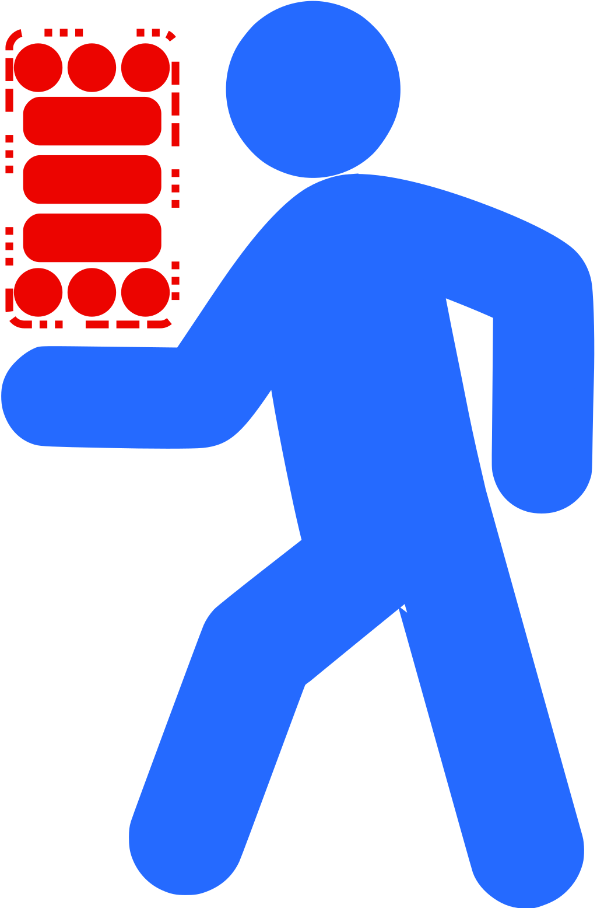
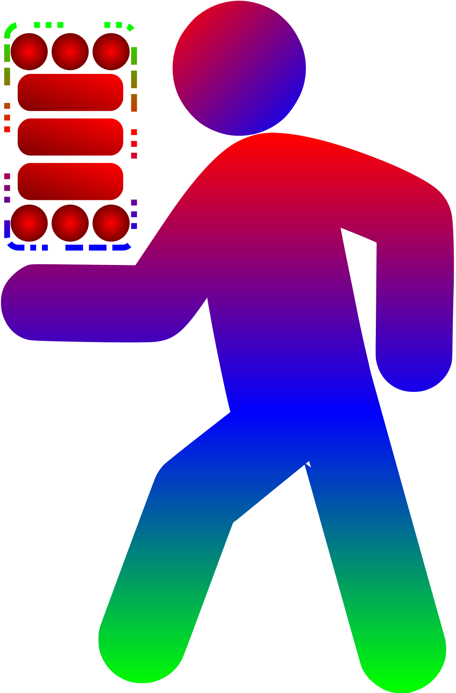

ქვეითი / Pedestrian
SOS!

სისტემა, რომელიც მოიცავს მობილურ აპლიკაციას და ინტერნეტ სერვერს...
Mobile App & Web Server...
Mobile App & Web Server...
მობილური აპლიკაციისგან და ინტერნეტ სერვერისგან შედგენილი სისტემა - ქვეითი SOS!
- აპლიკაციის მომხმარებელი იღებს ქვეითთა უსაფრთხო და კომფორტული გადაადგილების შემაფერხებელი ფაქტორების ამსახველ ფოტო/ვიდეო-ს (ან ტელეფონის მეხსიერებიდან ირჩევს უკვე გადაღებულ ფაილს)
- აღნიშნული ფოტო/ვიდეო იტვირთება ინტერნეტ სერვერზე, რომელსაც უმოკლეს დროში ნახავენ შესაბამისი უწყების თანამშრომლები
- თუ ფოტო/ვიდეო-ს გადაღება აპლიკაციით მოხდა, ატვირთულ ფოტო/ვიდეო-ს ავტომატურად დაერთვება დარღვევის ადგილის კოორდინატები. ტელეფონიდან არჩეული ფოტო/ვიდეო-ს ატვირთვის შემთხვევაში, მდებარეობა მომხმარებელმა უნდა მიუთითოს
- ამის შემდეგ, მომხმარებელს შეუძლია დაწეროს აღწერა, თუ რა მოხდა ან/და გამოიყენოს მზა ღილაკი, რომლის საშუალებითაც, ატვირთულ ფოტო/ვიდეო-ს დაერთვება მოკლე ტექსტური აღწერა (კატეგორია) ან/და ატვირთოს ხმის ჩანაწერი, სადაც ისაუბრებს დარღვევის შესახებ
- შესაბამისი უწყების მხრიდან რეაგირების შემდეგ, ატვირთულ ფოტო/ვიდეო-ს უწყებამ უნდა დაურთოს ტექსტი და ფაილი, რეაგირების შესახებ
- მომხმარებელი, რომლის ატვირთულ ფოტო/ვიდეო-ზეც მოხდა რეაგირება, მიიღებს შეტყობინებას რეაგირების მოხდენის შესახებ
- ატვირთული მასალა არის საჯარო
-
ქვეითთა უსაფრთხო და კომფორტულ გადაადგილებას ძირითადად აფერხებს:
- გამონაბოლქვი
- მძღოლების მხრიდან ქვეითთა უფლებების უგულებელყოფა (ტრანსპორტის ტროტუარზე შესვლა, ზებრაზე ქვეითისთვის გზის არდათმობა...)
- დაზიანებული და არარსებული ქვეითთა ინფრასტრუქტურა
- და ასე შემდეგ...
System consisting of a mobile application and web server - Pedestrian SOS!
- The user of the application takes photo / records video depicting the factors that hinder the safe and comfortable movement of pedestrians (or selects the already existing file from the phone's storage)
- This photo / video is uploaded to the web server, which will be seen by the employees of the relevant agency in the shortest possible time.
- If the photo / video was taken with the application, location coordinates will be automatically attached to the photo/video of violation. In case of uploading a photo / video selected from the phone storage, the location can be indicated by the user
- After that, the user can write a description of what happened and / or use the ready-made button, which will be attached to the uploaded photo / video with a short text description (category) and / or upload a voice recording where user will talk about the violation.
- After the response from the relevant agency, they must attach the text and file about the response to uploaded photo / video.
- The user whose photo / video was uploaded will receive a notification about the response.
- The uploaded data is public Safe and comfortable movement of pedestrians is mainly hindered by:
- Exhaust
- Neglect of pedestrian rights by drivers (entering the transport sidewalk, not giving way to pedestrians on Zebra ...)
- Damaged and non-existent pedestrian infrastructure
- etc...